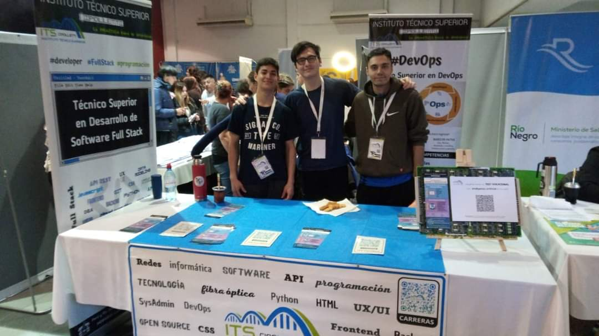
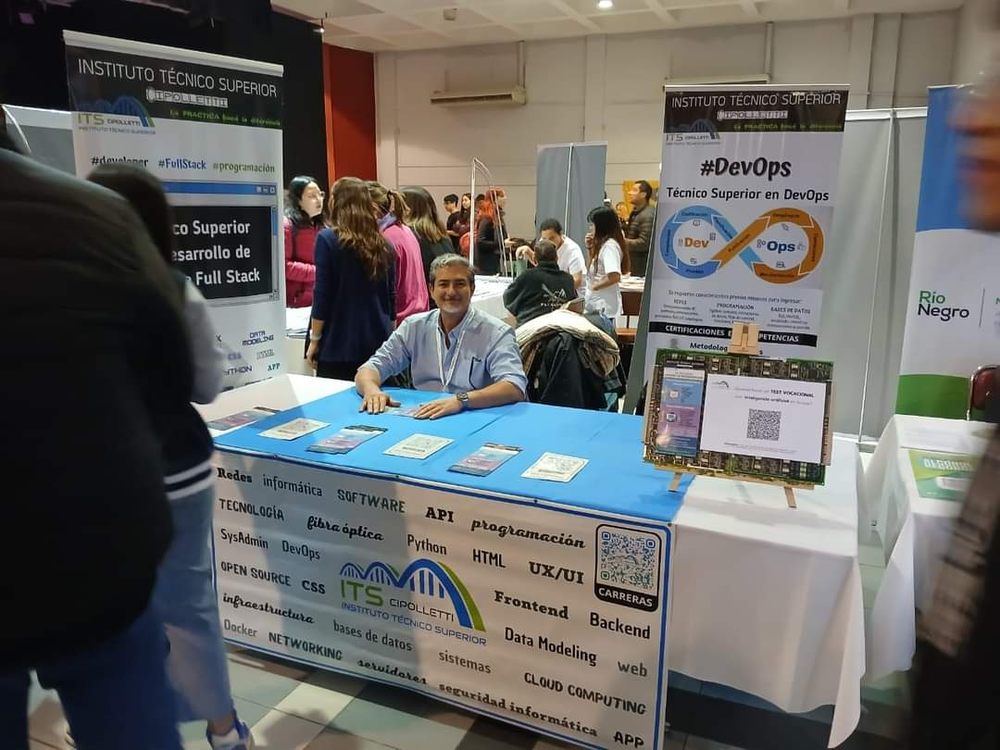
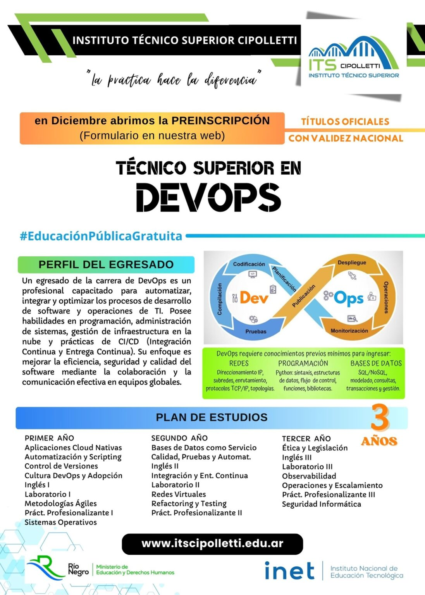
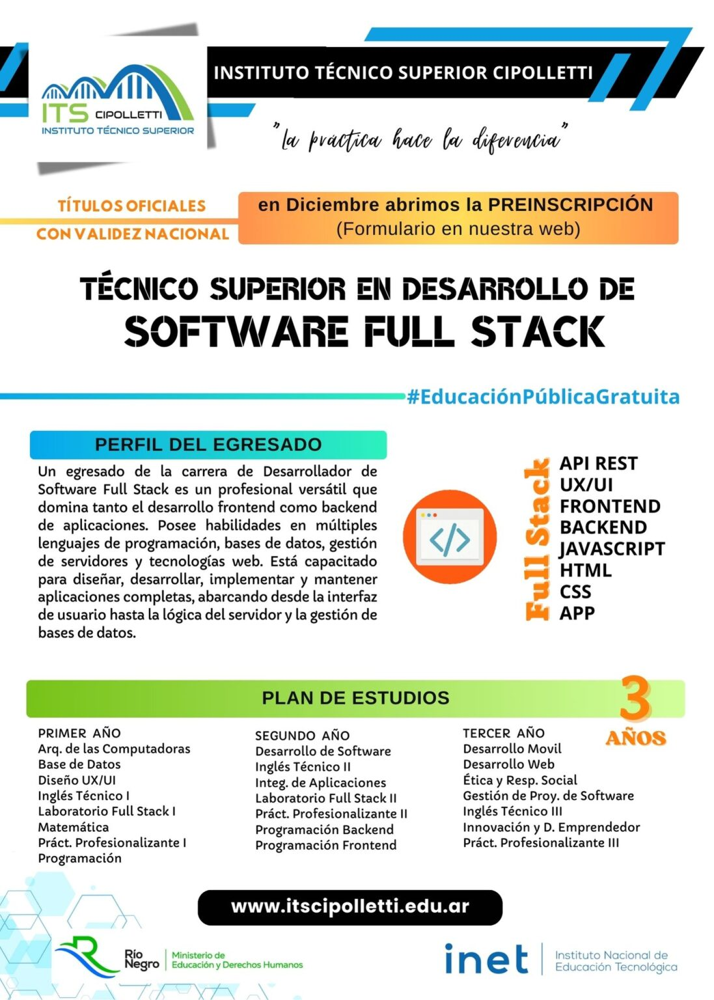

Educación al alcance de todos
El sello que distingue nuestra oferta educativa es la manera de aprender, que se lleva a cabo mediante clases prácticas, laboratorios, prácticas profesionalizantes y clases virtuales, generando un ambiente de constantes desafíos. La educación técnica superior tiene como MISIÓN la formación de técnicos superiores con habilidades, competencias y capacidades de alto nivel adecuadas a las demandas sociales, los avances científicos, tecnológicos y a los requerimientos productivos.
Con nuestros estudiantes de 2do año FULL STACK Mariano, Mateo y Leandro participamos de la «Expo Patagonia Universidad», organizada por el IUPA en la Asociación Española.
 Es un enfoque innovador que combina el desarrollo de software y las operaciones de TI. Esta metodología fomenta la colaboración, la automatización y la integración continua, optimizando el ciclo de vida del desarrollo de software.
Puede desenvolverse tanto en el frontend (parte visual) como en el backend (parte lógica) de un desarrollo web. Un Desarrollador de Software Full Stack cuenta con una faceta integral y posee conocimientos y herramientas que le permiten afrontar cualquiera de las etapas de un proyecto web.
